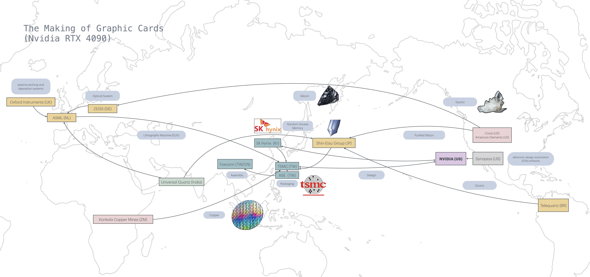

Complex network reveals itself only when certain node malfunctions2, Sam Altman's tweet shine some lights on the needs of something so intricate yet fundamental to all current developments of AI: Graphic Processing Units. The dominant discourse around AI often ignores its material aspects, leading to an incomplete and sometimes misleading understanding of its impact. While discussions frequently focus on ethical concerns like bias and fairness, the physical infrastructures that sustain AI development remain in the background. The AI industry relies on highly centralized semiconductor production, intensive energy consumption, and resource heavy supply chains that contribute to global environmental and political tensions. This section comes from the vantage point of a Taiwanese Artist, navigating an uneasy intersection of identity, geopolitics and infrastructure, which make search of the technology a personal journey. As Langdon Winner observed:we have re-enabled chatgpt plus subscriptions! thanks for your patience while we found more gpus.1
- December 2023, OpenAI CEO Sam Altman.
"The issues that divide or unite people in society are settled not only in the institutions and practices of politics proper, but also, and less obviously, in tangible arrangements of steel and concrete, wires and semiconductors, nuts and bolts." 3How does a sliver crystal holds etched with circuits carries the weight of national identity and politic, and how does it even shape my perception of how to work as an artist. While writing the piece, there is a slight humming coming from the laptop, barely noticeable yet constants. This hidden noise from the fan, quietly cooling down millions of transistors that were once grains of sand. Heat emerges as a byproduct of electricity flowing, swallowing and spiting signals and data through circuits. This gentle hum signifies the countless layers of technology working beneath the surface, a constellation of silicon, metal, and code in operation.

Sections
- Art as commodity and commodity as art - The intersection of art and technology
- Graphics Processing Units - The hardware behind AI
- Sand, Quartz and Silicon - The raw materials of computation
- All touches leave marks - The delicate nature of semiconductor manufacturing
- Cleanrooms and Chokepoints - The controlled environments of chip production
- Fabrications - The manufacturing process
- The Taiwan Dilemma - Geopolitical implications